Foto — Rafaela Scremin
Foto — Rafaela Scremin
Crítica
QUE CÃO VADIO É ESSE?
Vamos falar sobre o elefante na sala? Ele incomoda muita gente, mas todos fazemos de conta que ele não está ali, viramos os olhos comprimidos para os cantinhos …
1575 matérias no acervo — página 32 de 66
Foto — Rafaela Scremin
Vamos falar sobre o elefante na sala? Ele incomoda muita gente, mas todos fazemos de conta que ele não está ali, viramos os olhos comprimidos para os cantinhos …
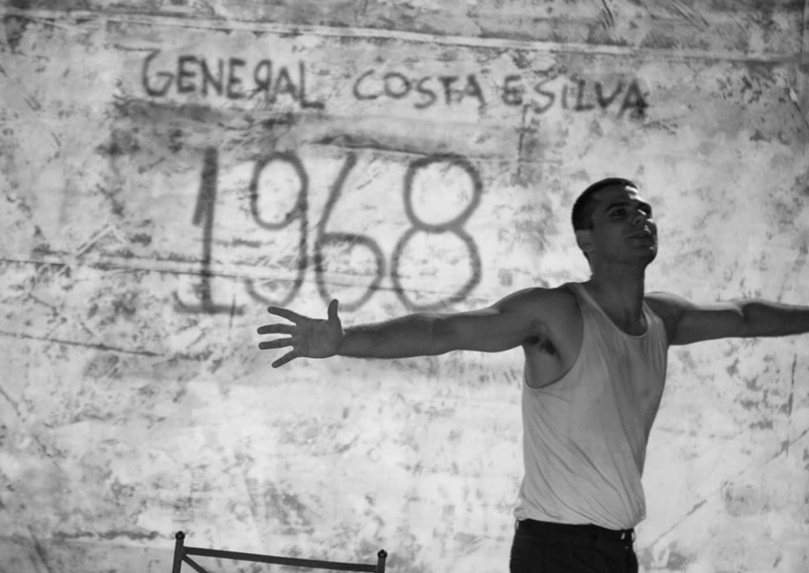
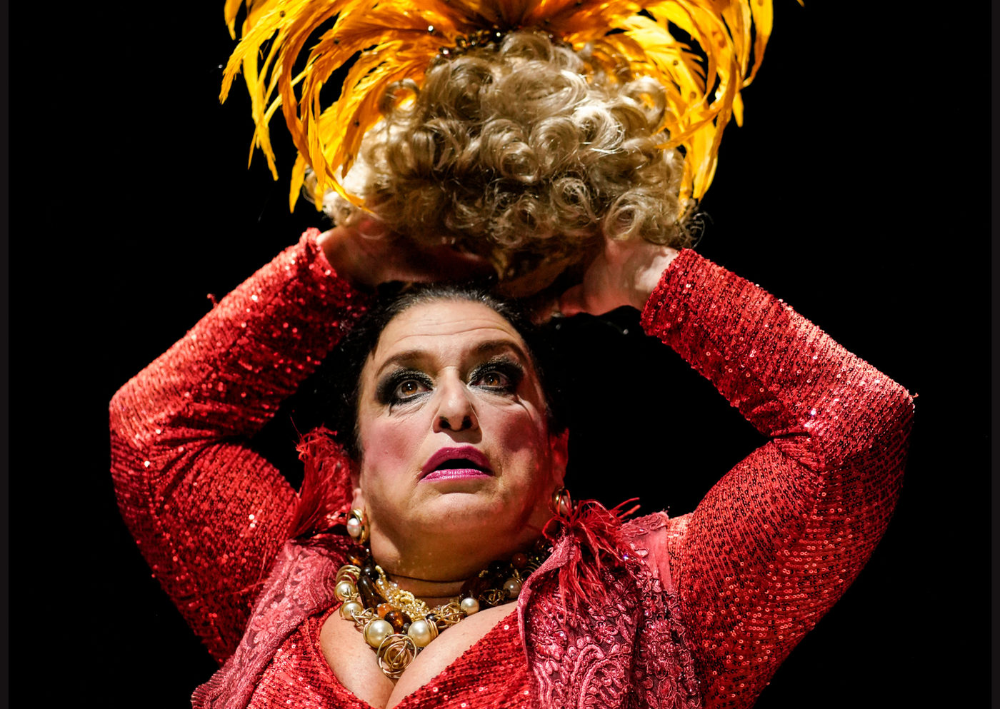
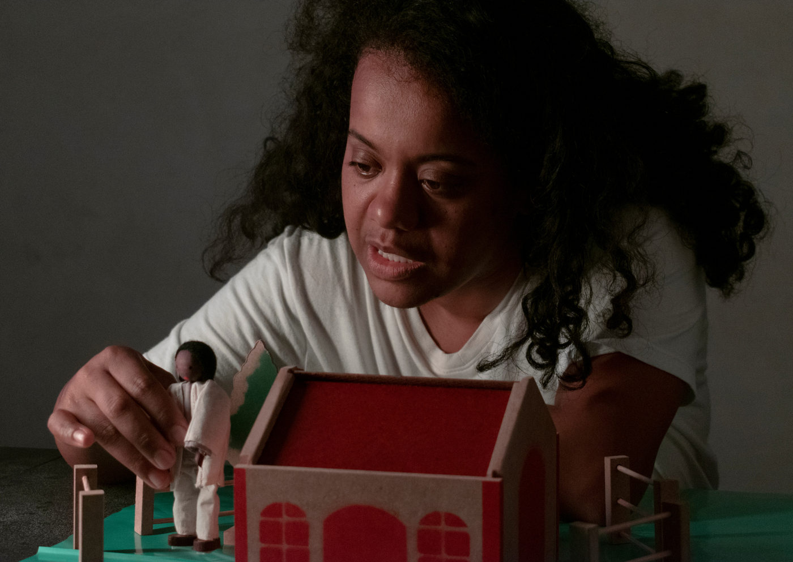
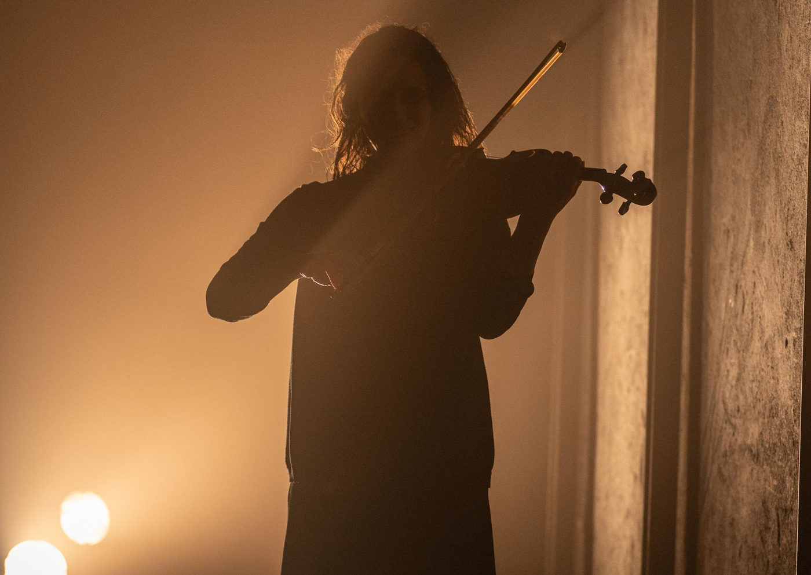
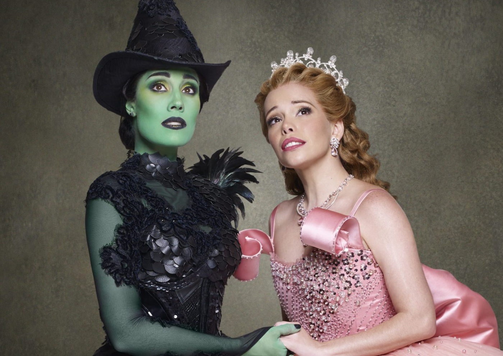

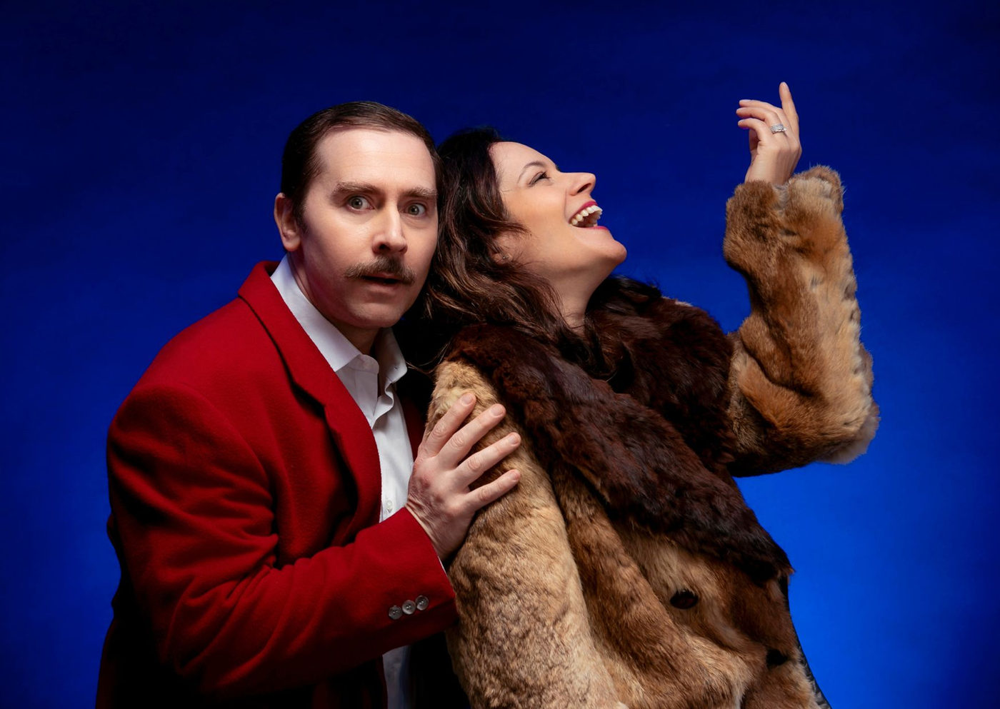
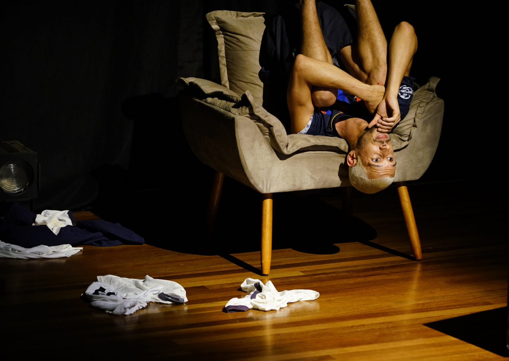
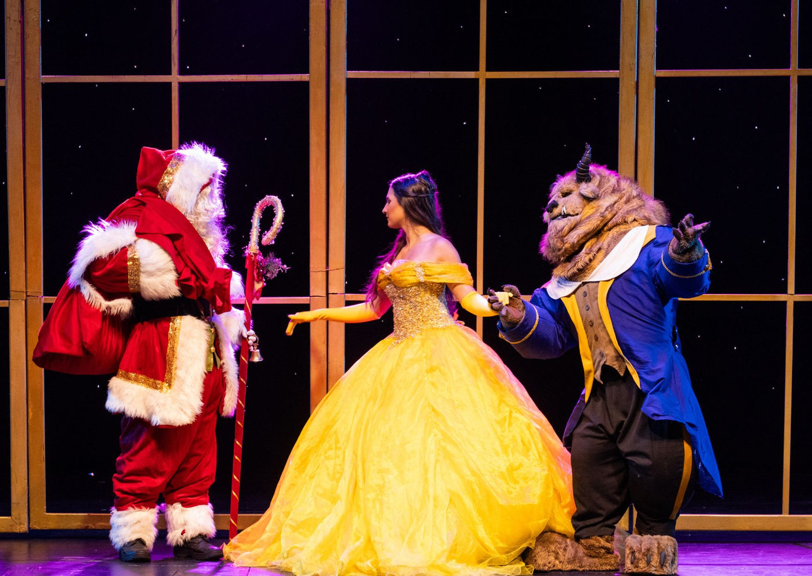
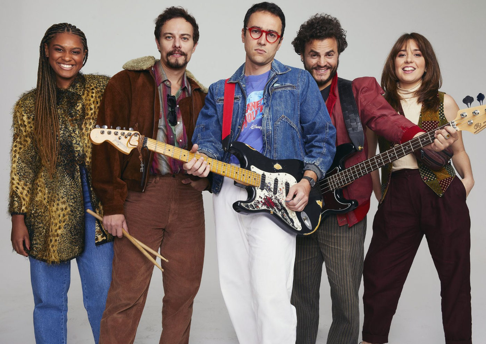
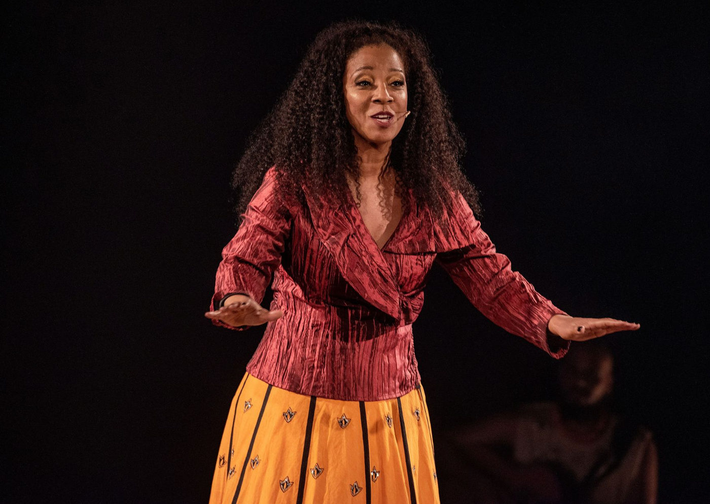
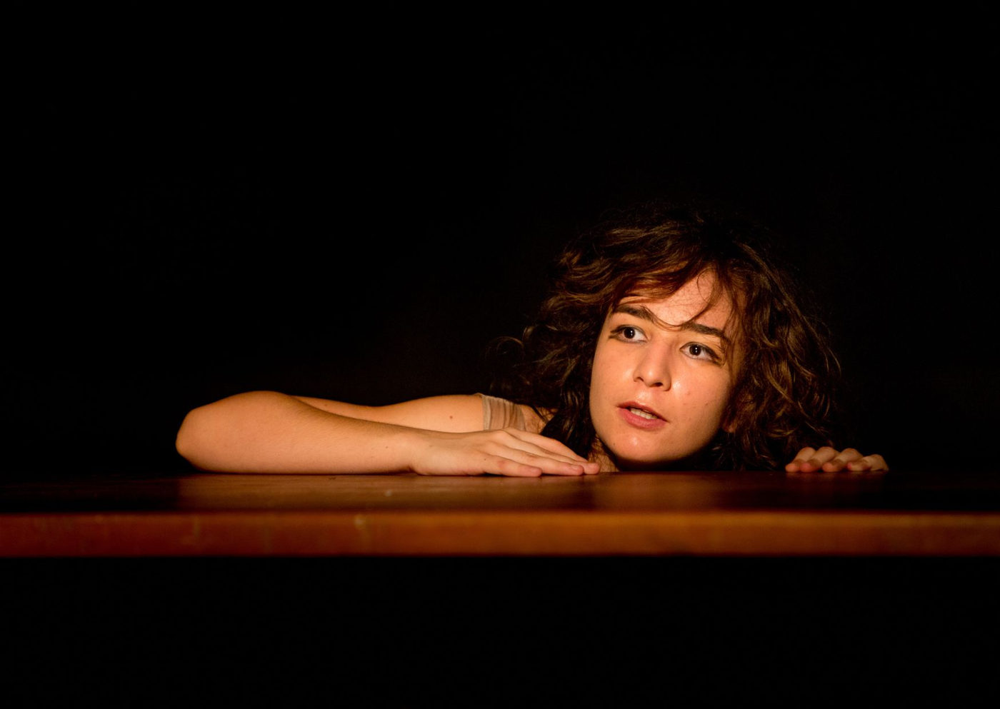
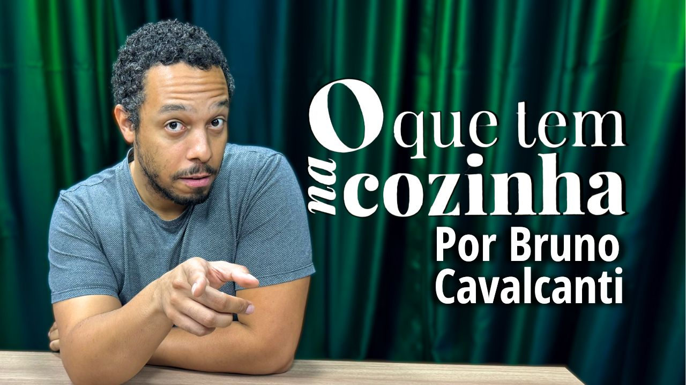
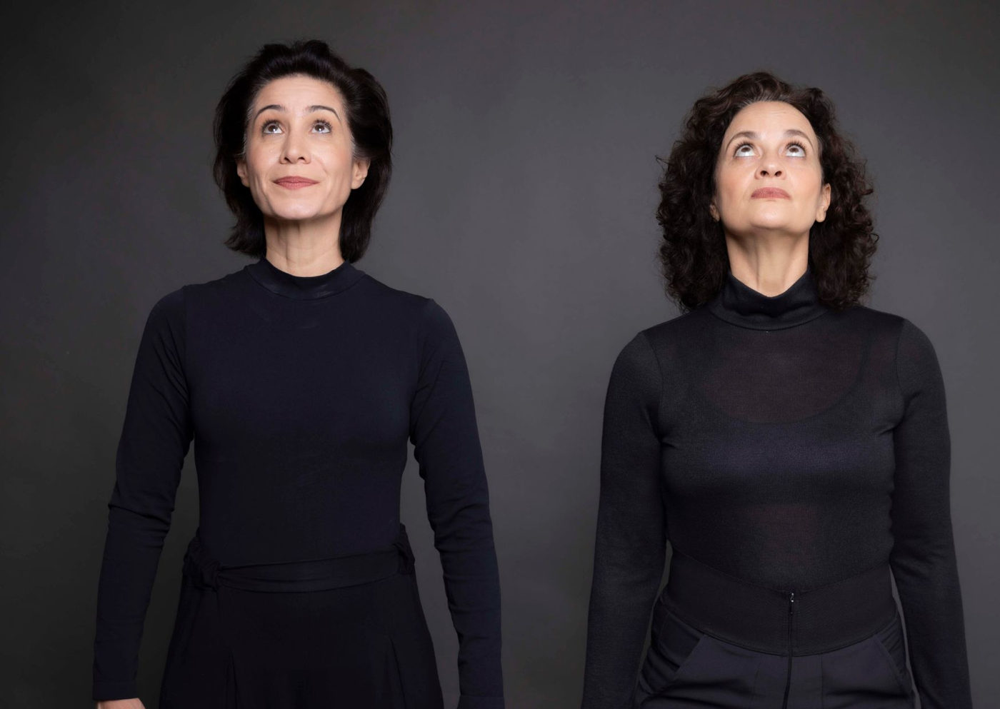
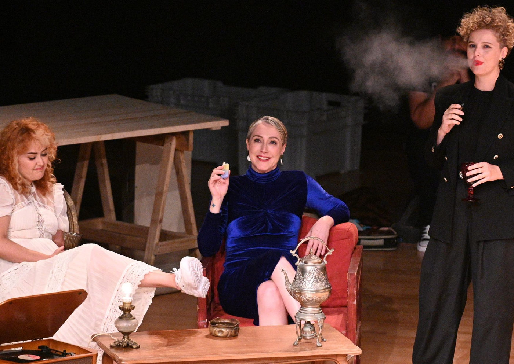